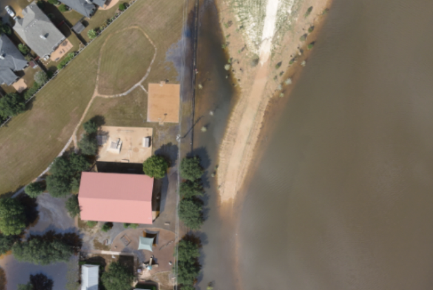

RescueNet: A High Resolution UAV Semantic Segmentation Benchmark Dataset for Natural Disaster Damage Assessment
Image | Hurricane | Response
ML Task Type: Semantic segmentation
RescueNet is a dataset for hurricane damage assessment. It contains 4,494 post disaster images collected after Hurricane Michael and is introduced for semantic segmentation.
- 
FloodNet: A High Resolution Aerial Imagery Dataset for Post Flood Scene Understanding
Image | Hurricane | Response
ML Task Type: Image classification, semantic segmentation, visual question answering
FloodNet is dataset for post-flood scene understanding, i.e flood detection and distinguishing different water bodies and flood. It contains about 11, 000 question-image pairs for VQA and 3,200 images. It is introduced for image classification, semantic segmentation, and visual question answering.